Open the app in your browser. Enter the e-mail and password given to you by your manager, then press Sign In. What you see after logging in depends on your role — waiters, coordinators and cashiers land directly on the Orders page; managers and owners land on the dashboard.
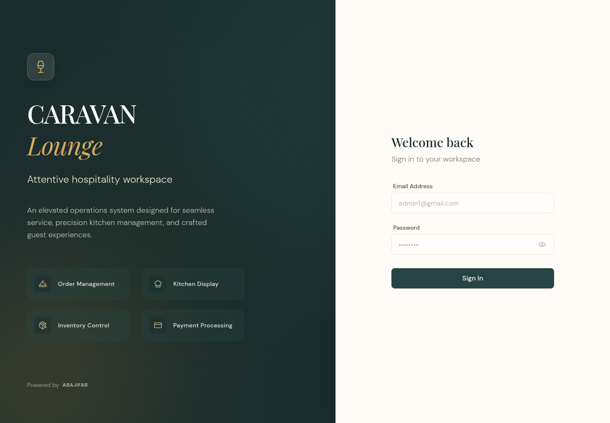
Everything important is on one page. The six colored cards at the top show today's sales, orders, average order value, orders in progress, low-stock items, and total stock value. Click any card to open a popup with the details behind the number. Below them: the 14-day sales trend, live orders in progress, low stock, top-selling items, profitability, and kitchen performance. The page refreshes itself every 10 seconds.
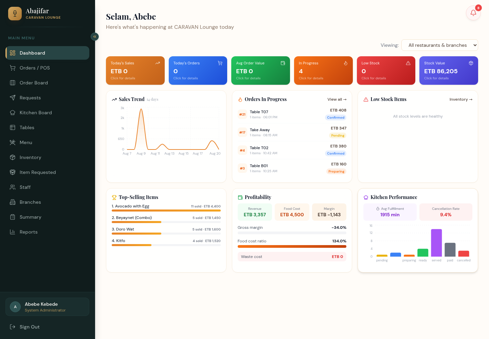
The Orders page lists every order with table, chef, item count, time, total and status. Use the tabs and filters (status, waiter, table, item, date, time, payment) to narrow the list. Click a row to see the full order detail — it stays up to date automatically while open.
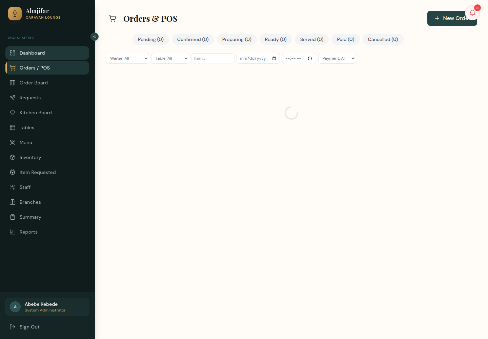
| Status | Meaning | Who moves it on |
|---|---|---|
| pending | Just placed | Coordinator confirms & assigns a chef |
| confirmed | Accepted, waiting for kitchen | Chef starts preparing |
| preparing | Being cooked | Chef marks ready |
| ready | Waiting to be served | Waiter serves |
| served | On the table | Cashier takes payment |
| paid | Completed | — |
A live, color-coded view of where every active order stands: Requested (violet), Received & Confirmed (blue), In Progress (orange), and Completed (green — orders that are ready). Orders waiting more than 20 minutes get a red warning. When a column is busy it automatically switches to a compact one-line view.
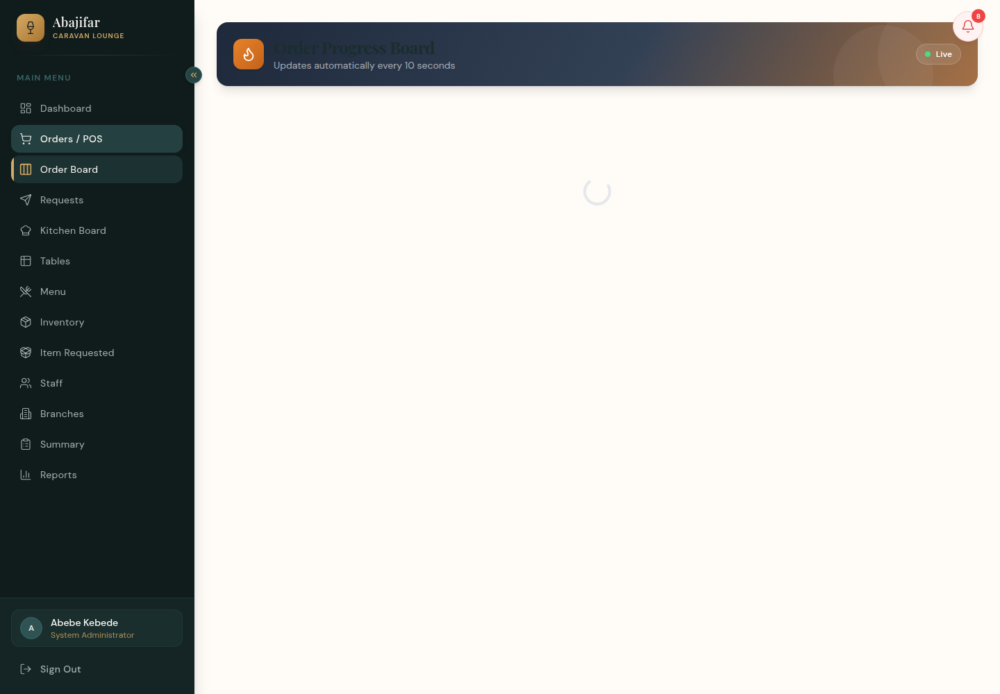
Chefs see their queue of confirmed orders, grouped in tabs per chef. Use the buttons on each ticket to accept, start preparing, and mark ready. The board refreshes every 10 seconds.
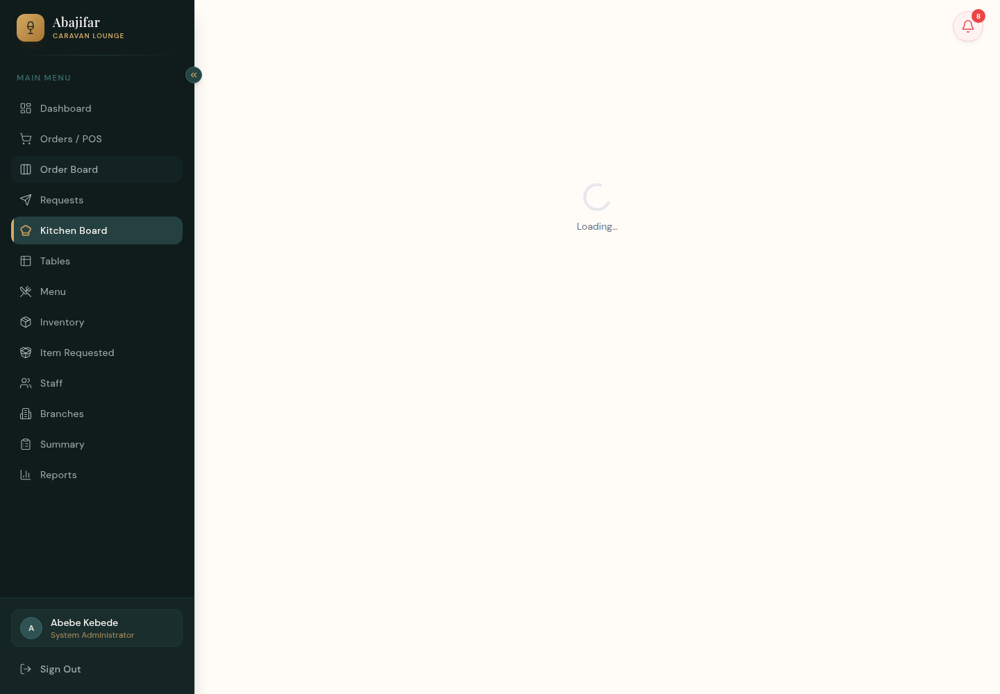
Shows every table with its number, seats, section, and live status. Managers can add or edit tables; tables free up automatically when an order is paid.
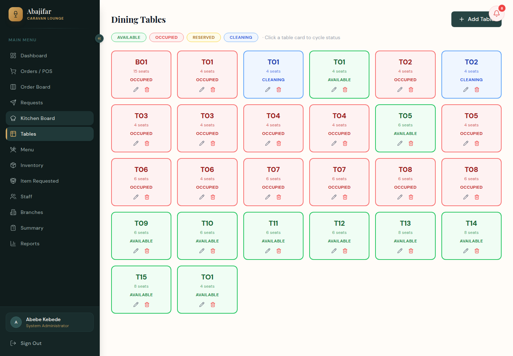
Maintain categories and dishes: name, price, description, preparation time, and availability. Items switched off here disappear from the waiters' POS immediately.
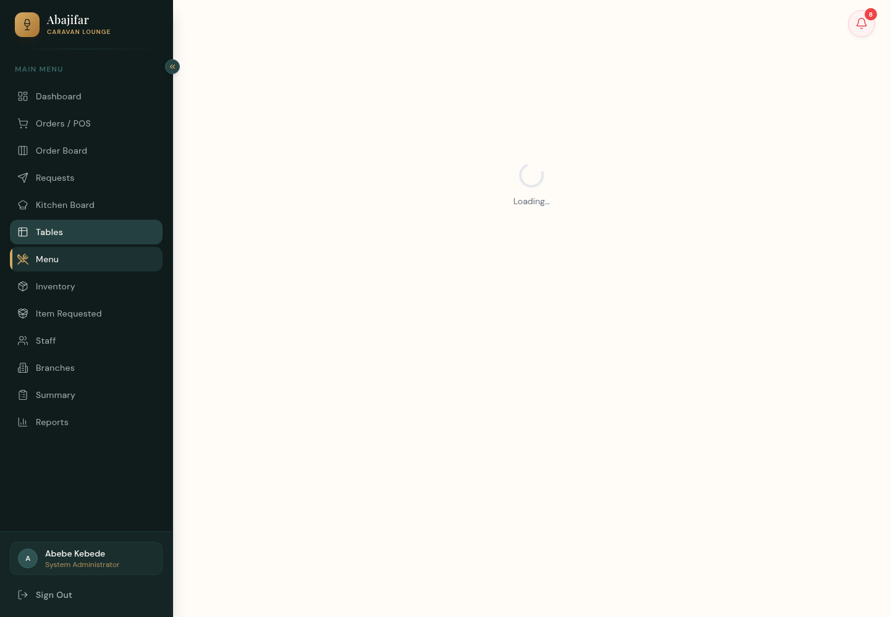
Track every stock item with unit, current level, minimum level, cost and expiry. Tabs cover suppliers, purchase orders, adjustments and alerts — items below minimum show as Warning, and at half the minimum (or zero) as Critical.
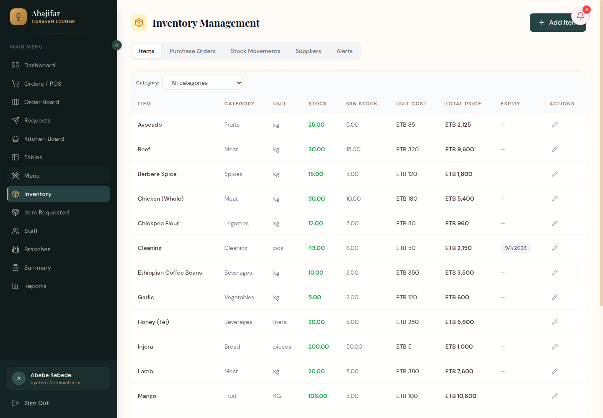
Staff request stock from the store; approvers see each request with helpful badges (low stock, expires soon, expired) and approve, reject or issue. The list updates automatically.
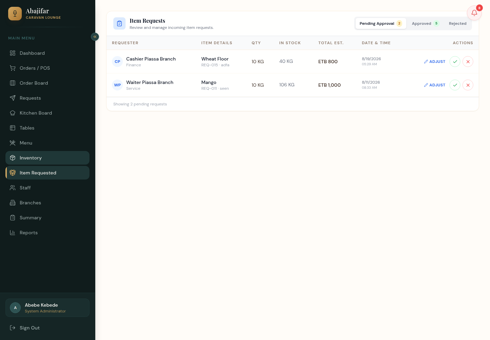
Create and manage employee accounts: name, e-mail, phone, role, branch, and active status. The header shows how many people match the current filter.
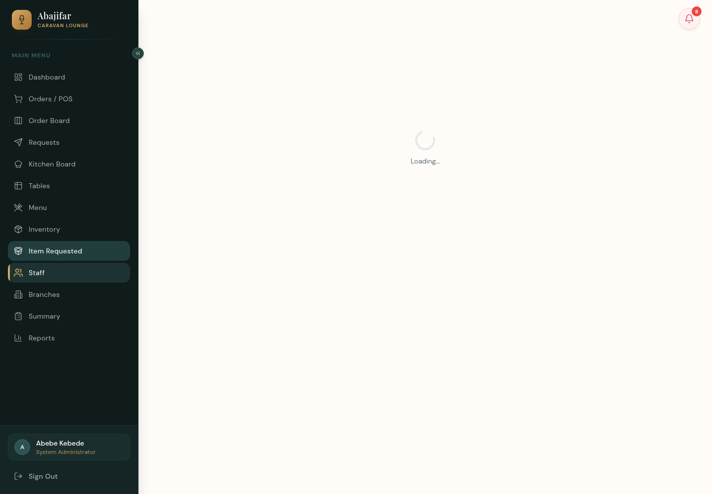
Manage the company hierarchy: restaurants and their branches with contact details.
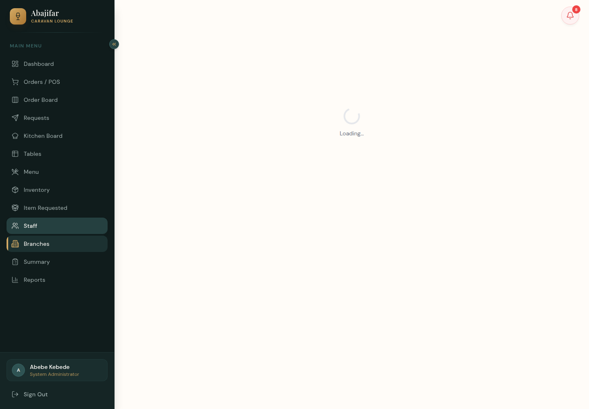
Managers/owners/admins: the Overview tab shows daily revenue, payment methods and order status; the other tabs (Order Board, Menu, Inventory, Item Requested, Staff, Branches) each offer filters and one-click Export Excel / Export PDF.
Cashiers see a simplified version with just two tabs: Sales (filter by payment type and date) and Items Purchased (filter by category and date), both exportable.
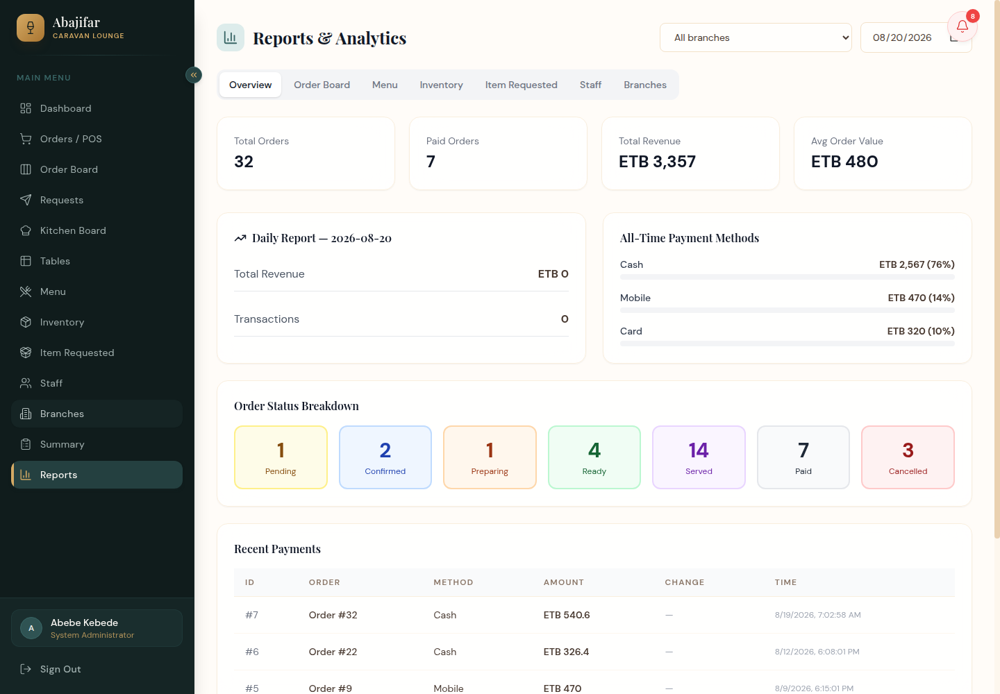
| Question | Answer |
|---|---|
| Numbers look old? | Every live page refreshes itself every 10 seconds — no refresh button needed. |
| Can't see a page? | Your role decides which menu entries you get. Ask a manager if you need more access. |
| Wrong item on an order? | While the order is pending/confirmed/preparing it can be cancelled (whole order or items) by the waiter or coordinator. |
| Export doesn't download? | Allow downloads/pop-ups for this site in your browser. |
| Forgot password? | An admin can set a new password from the Staff page. |
/backend/api path. Staff should never be asked for database credentials or server secrets.Documentation update: this user manual describes operational features. Production-security and release status are tracked separately in documents 07–12 and do not change the steps above.